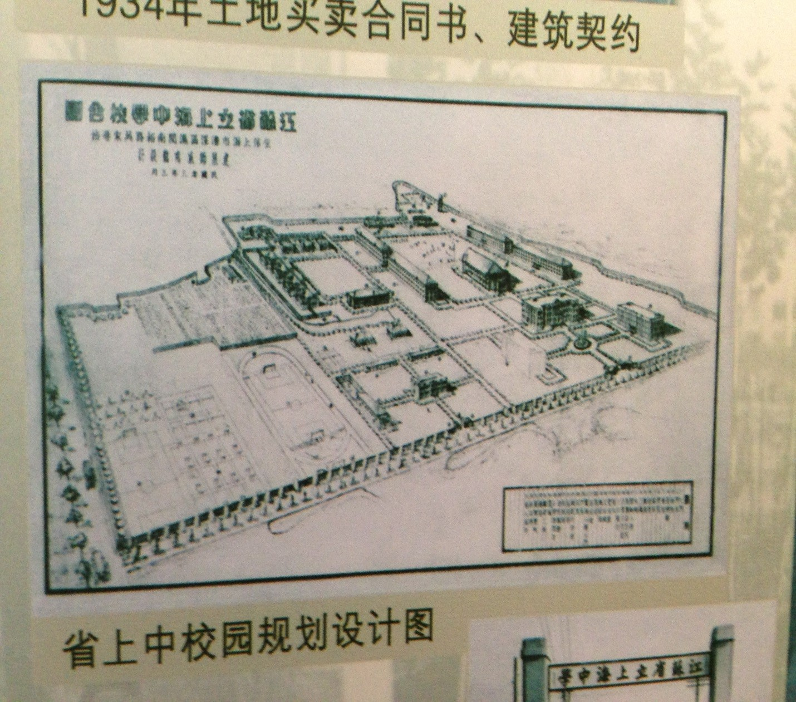

If you walked up the main road and turn right after the traffic
crossing barrier you will find yourself standing in front of the former
Dining Hall East. Inside are studios and galleries of the Art
Department to the right and to the left, the school museum – If the
latter is open, we encourage you to visit. Hit the button for Museum
Guide if you enter.
And here is a diagram of the campus as it was on the day of its opening in 1934.
